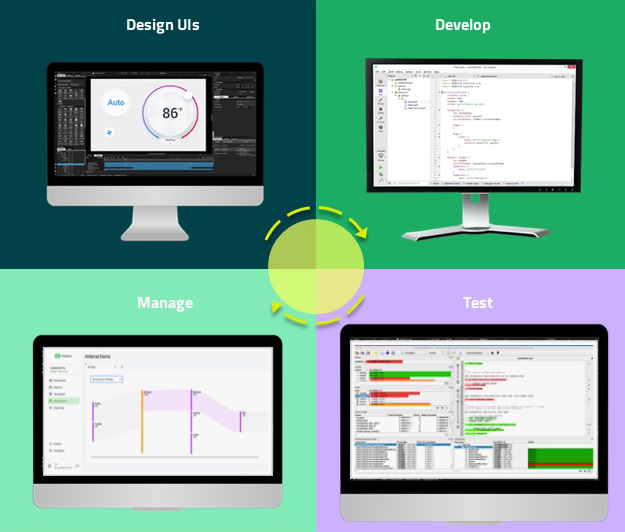
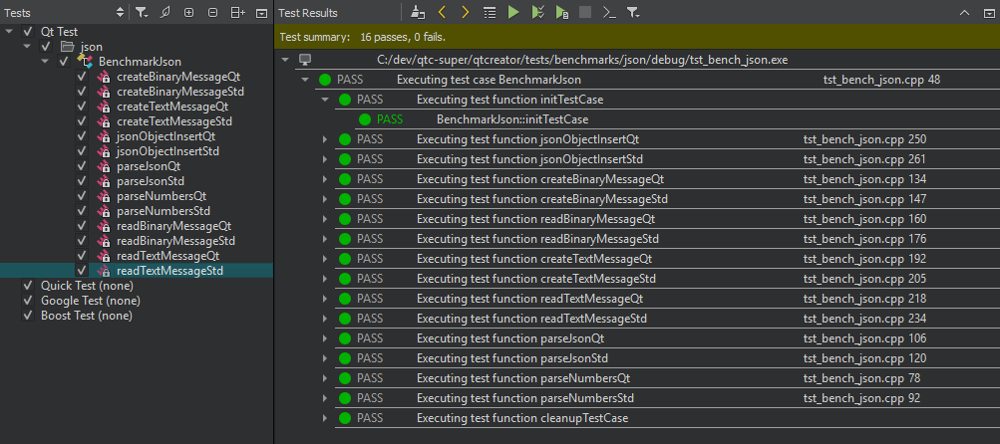
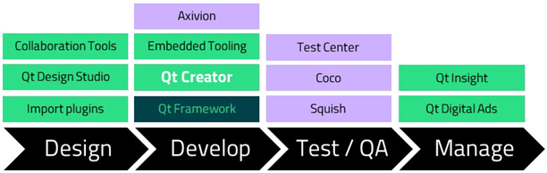

Overview
Qt Creator is a cross-platform, complete integrated development environment (IDE) that you can use to create applications for desktop, embedded, and mobile operating systems, or web browsers.
With Qt, you can develop applications and user interfaces once and deploy them to many platforms. Qt Creator has the tools for accomplishing your tasks throughout the whole application development life-cycle, from creating a project, designing a UI, and writing code to building applications and deploying them to the target platforms for running and debugging.

Application development life-cycle
Managing Projects
First, you need a project. Qt Creator relies on a separate build system, such as CMake, qmake, or Qbs for building the project. From the build system, Qt Creator gets most of the information it needs to offer services for writing, editing, and navigating source code, as well as to deploy and run applications. It stores additional information in the project settings.
Share projects with other designers and developers across different development platforms with a common tool for design, development, and debugging.
- Creating Projects
To set up a project, you first have to decide what kind of an application you want to develop: do you want a user interface based on Qt Quick or Qt Widgets. Second, you have to choose the programming language to implement the application logic: C++ or Python.
- Version Control Systems
The recommended way to set up a project is to use a version control system. Store and edit only project source files and configuration files. Do not store generated files.
- Configuring Projects
Installation programs and project wizards create default configurations for Qt Creator and your projects. Change the configurations in the Projects mode.
For more information, see How To: Manage Projects.
Designing User Interfaces
To create intuitive, modern-looking, fluid user interfaces (UI), use Qt Quick and Qt Design Studio:
- Qt Quick Designer
Or, enable the Qt Quick Designer plugin to visually edit UI files (
.ui.qml). - Converting UI Projects to Applications
Qt Quick UI Prototype projects (
.qmlproject) are useful for creating user interfaces. To use them for application development, you have to convert them to Qt Quick Application projects that have project configuration files (CMakeLists.txtor.pro),.cpp, and.qrcfiles. - UI files
If you switch between Qt Creator and Qt Design Studio or cooperate with designers on a project, you might encounter
.ui.qmlfiles. They are intended to be edited in Qt Design Studio only, so you need to be careful not to break the code. To visually edit the files in Qt Creator, enable the Qt Quick Designer plugin. - Using QML modules with plugins
Load C++ plugins for QML to simulate data.
Use the QML live preview to preview a QML file or an entire Qt Quick application on the desktop, as well as on Android and embedded Linux devices. The changes you make to the UI are instantly visible to you in the preview.
If you need a traditional user interface that has a clear structure and enforces a platform look and feel, use Qt Widgets and the integrated Qt Widgets Designer.
For more information, see How To: Design UIs and UI Design.
Editing Code
Writing, editing, and navigating in source code are core tasks in application development. Therefore, the code editor is one of the key components of Qt Creator. Use the code editor in the Edit mode.
As an IDE, Qt Creator differs from a text editor in that it knows how to build and run applications. It understands the C++ and QML languages as code, not just as plain text. Therefore, it can offer useful features, such as semantic highlighting, checking code syntax, code completion, and refactoring actions.
Qt Creator supports some of these services also for other programming languages, such as Python, for which a language server is available that provides information about the code to IDEs.
Semantic Highlighting
To help you write well formatted code, Qt Creator highlights code elements and blocks. It understands the C++, QML, and JavaScript languages as code, not as plain text, so it reads the source code, analyzes it, and highlights it based on the semantic checks that it does for code elements, such as:
- Types (such as classes, structs, and type definitions)
- Local variables
- Class fields
- Virtual functions
You can select the color scheme to use for semantic highlighting in the text editor preferences.
Qt Creator supports syntax highlighting also for other types of files than C++, QML, or JavaScript. It uses the KSyntaxHighlighting syntax highlighting engine with Kate syntax definitions. It comes with most of the commonly used Kate definitions, and you can download more definitions in the text editor preferences.
Finding
Use the incremental and advanced search to search in currently open projects or files on the file system or use the locator to browse through projects, files, classes, functions, documentation, and file systems.
Refactoring Code
Code refactoring is the process of improving and simplifying code without modifying the existing functionality of an application. Find and rename symbols and apply predefined actions to refactor code.
Refactor code to:
- Improve internal quality of your application
- Improve performance and extensibility
- Improve code readability and maintainability
- Simplify code structure
Configuring the Text Editor
Configure the text editor to suit your specific needs. Change the fonts, colors, highlighting, and indentation.
If you are used to the Vim editor, run the main editor in the FakeVim mode.
For more information, see How To: Edit Code, Editors, and Text Editor.
Building, Deploying, and Running Applications
Run and deploy Qt applications that you build for different target platforms or with different compilers, debuggers, or Qt versions. Kits define the tools, device type and other settings to use when building and running your project.
Qt Creator integrates cross-platform systems for build automation: CMake, qmake, Qbs, and Autotools. In addition, you can import projects as generic projects and fully control the steps and commands to build the project.
Build applications for, deploy them to, and run them on the desktop environment or a device. With kits, as well as build, deploy, and run configurations, you can quickly switch between different setups and target platforms.
For more information, see How To: Build and Run, Build Systems, Build Configurations, and Run Configurations.
Embedded Platforms
You can develop applications for the following embedded platforms:
Install the toolchain for building applications for the targeted embedded platform on the computer, and then use Qt Online Installer to install Qt libraries that are built for the platform. Add a kit with the toolchain and the Qt version for the device's architecture. When possible, Qt Online Installer creates suitable kits for you.
You can connect embedded devices to the computer and select the appropriate kit to run, debug, and analyze applications built for them from Qt Creator.
Deploy configurations handle the packaging and copying of the necessary files to a location you want to run the executable at, such as the file system of a device.
For more information, see How To: Develop for Devices and Devices.
Mobile Platforms
You can develop applications for the following mobile platforms:
Install the toolchain for building applications for the targeted mobile platform on the computer, and then use Qt Online Installer to install Qt libraries that are built for the platform. Add a kit with the toolchain and the Qt version for the device's architecture. When possible, Qt Online Installer creates suitable kits for you.
You can connect mobile devices to the computer and select the appropriate kit to build, run, debug, and analyze applications from Qt Creator.
Before starting application development, analyze and define the requirements, scope, and functionality of the application to ensure efficient functionality and a smooth user experience on mobile devices.
For more information, see How To: Develop for Devices, Optimizing Applications for Mobile Devices, Supported Platforms, and Deploy Configurations.
Debugging Applications
A debugger lets you see what happens inside an application while it runs or when it crashes. A debugger can do the following to help you find errors in the application:
- Start the application with parameters that specify its behavior.
- Stop the application when conditions are met.
- Examine what happens when the application stops.
- Make changes in the application when you fix an error and continue to find the next one.
Qt Creator integrates several debuggers for inspecting the state of your application. It automatically selects a suitable debugger for each kit from the ones it finds on the computer. Edit the kits to override this choice.
If you install Qt Creator with Qt Online Installer, the GNU Symbolic Debugger is installed automatically and you should be ready to start debugging after you create a new project. However, you can change the setup to use debugging tools for Windows, for example.
Connect devices to your computer to debug processes running on the devices.
For more information, see Debugging and How To: Debug.
Finding Issues in Source Code
Devices have limited memory and CPU power, so you should use them carefully. Qt Creator integrates code analysis tools for detecting memory leaks, profiling function execution, analyzing CPU use, and eliminating unnecessary complexity of code. Other tools provide code coverage and visualize trace events.
Some tools, such as QML Profiler and Clang Tools, are installed with Qt Creator. Install and configure the other supported tools on the computer to use them from Qt Creator.
For more information, see Analyzing Code and How To: Analyze.
Running Tests
Qt Creator supports both code based tests and build system based tests. Code based testing offers special handling for particular testing frameworks that strongly ties to the underlying code models or specialized parsers. Build system based testing is independent from any testing frameworks. It retrieves information directly from the underlying build system and uses it or even the build system as such to execute the respective tests.
Qt Creator integrates the following testing frameworks for unit testing applications and libraries:
- Boost.Test
- Catch2 test framework
- Google C++ Testing Framework
- Qt Quick Test framework
- Qt Test framework
In addition, Qt Creator offers build system based support for CTest.
You can use Qt Creator to create, build, and run code based tests for your projects.

Using Squish
The experimental Squish plugin integrates Squish into Qt Creator.
Squish is an automated GUI testing framework for testing Android, iOS, Java, macOS, Qt, Tk, Windows, and XView applications, as well as HTML-based web applications running in browsers.
In Qt Creator, you can:
- Open existing Squish test suites.
- Create new test suites and test cases.
- Record test cases (in a very limited way compared to what you can do inside the Squish IDE).
- Use Squish Runner and Server to run test suites or cases and view the results in the Squish output.
- Set breakpoints before running tests to stop at certain locations and inspect the local variables, similarly to when debugging a test.
To use the plugin, you must download and install Squish, create a connection to the Squish Server, and specify the application under test (AUT) to run.
For more information, see How To: Test.
Publishing Applications
Create installation packages for mobile devices that you publish to application stores and other channels. You must make sure that the package contents meet the requirements for publishing on the channel.
For more information, see Publishing to Google Play.
Qt Tools
Qt Creator is one of many Qt tools for designing and developing applications.

Tools for Qt application development